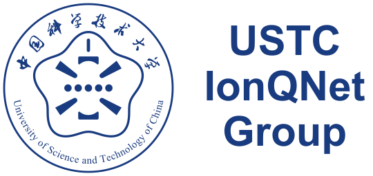

USTC IonQNet Group
圆徽在左，等字号三行组名在右。
查看网页首页 ↗

透明底 · 反白图形 · 等字号组名
导航栏实际效果
圆徽与三行组名垂直居中
USTC
IonQNet
Group
Home
Research
Members
Publications
Gallery
浅色背景 · 蓝色版

图标 SVG ↓
组合 SVG ↓
深色背景 · 反白版
图标 SVG ↓
组合 SVG ↓